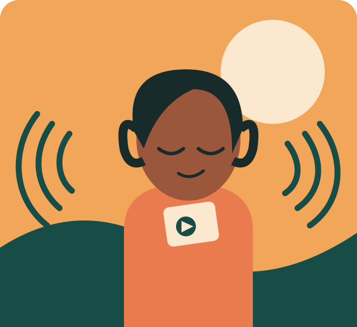

AUDIO · 8 MIN
AUDIO · 8 MIN
IDENTITY & BELONGING
The sound of starting over
One small recording becomes a way to remember home, and imagine what comes next.
Listen to the storyREAL VOICES. HUMAN STORIES.
A home for thoughtful audio and film that brings us closer to the people, places, and ideas that shape our world.

THE STORY SHELF
Made to be heard, watched, and understood.
AUDIO · 8 MIN
IDENTITY & BELONGING
One small recording becomes a way to remember home, and imagine what comes next.
Listen to the story VIDEO · 6 MIN
VIDEO · 6 MIN
PLACES & MEMORY
A familiar street reveals the details that make a place feel like ours.
Watch the story AUDIO · 5 MIN
AUDIO · 5 MIN
COMMUNITY
Two neighbors discover that curiosity can open a door where assumptions once stood.
Hear their voicesA MORE OPEN STORY SPACE
We believe the way a story is shared should never be a barrier to experiencing it. That means captions, transcripts, clear navigation, and room for different ways of listening and watching.
Explore accessibility at StoryCast